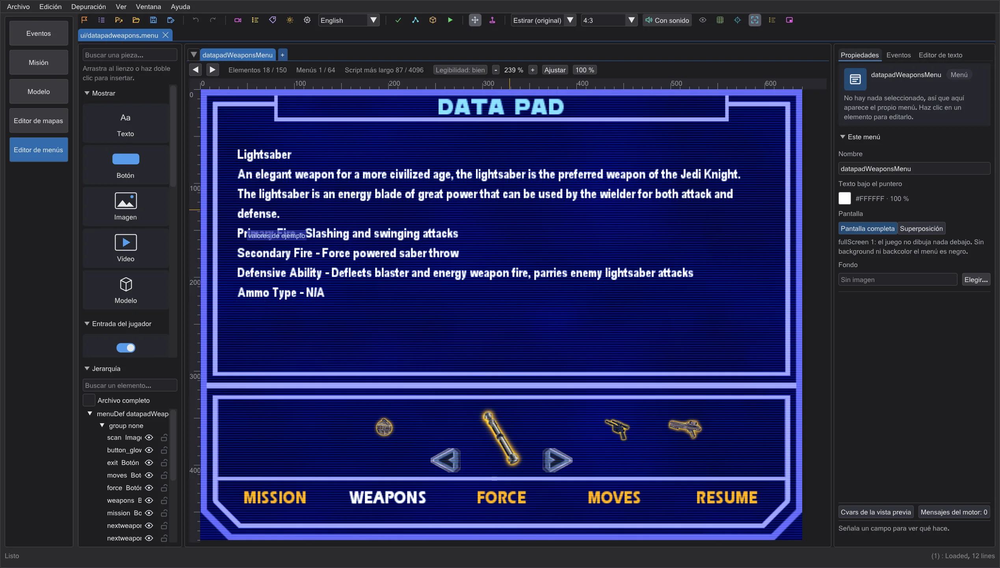
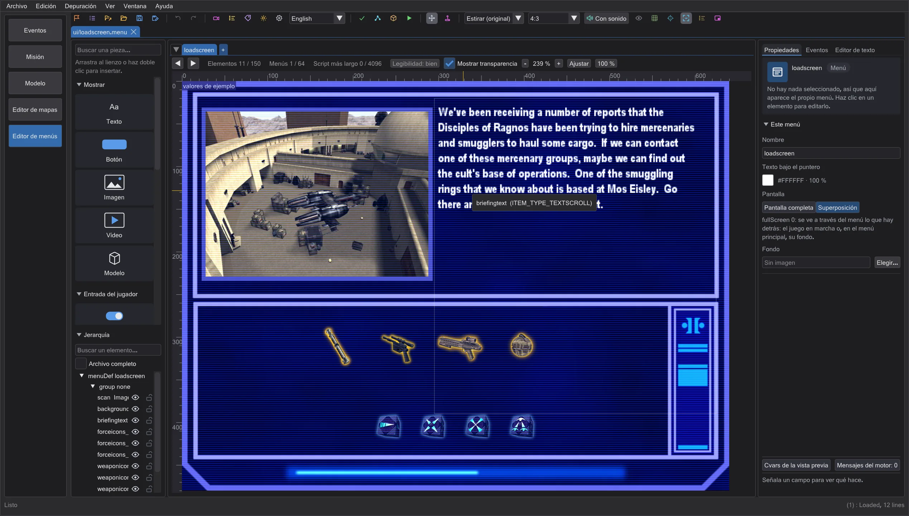
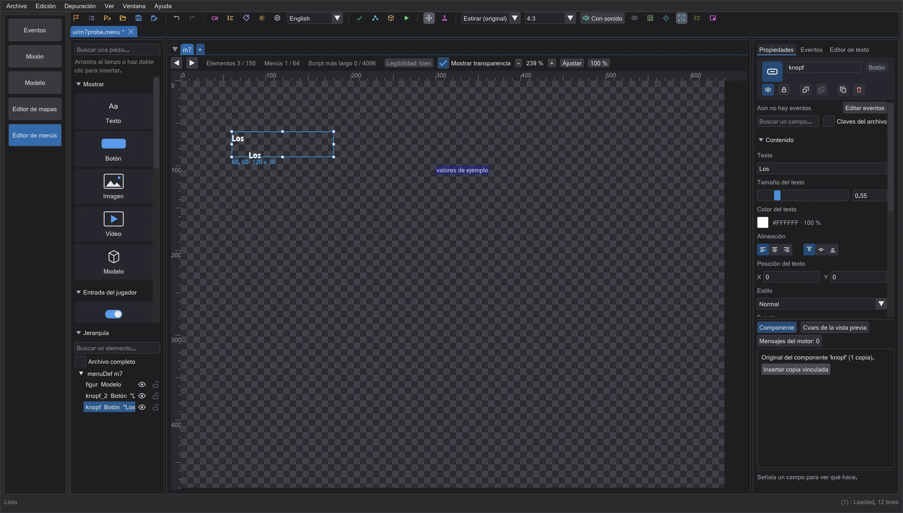
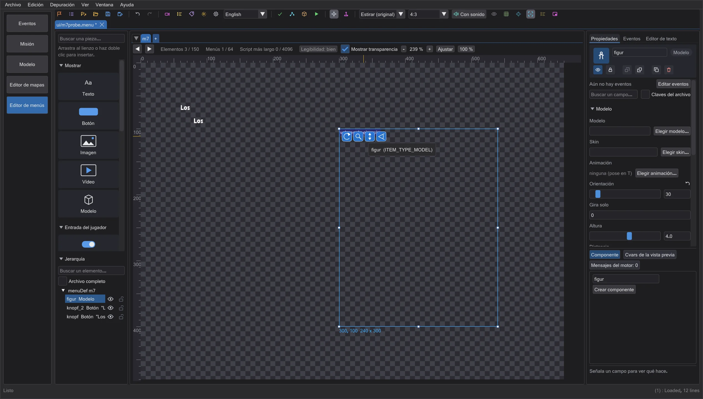

Editor de menús: valores del juego, recarga en el juego, componentes
Cada elemento que muestra valores de la partida en curso se dibuja ahora como en el juego, con valores de ejemplo que puedes cambiar; las asignaciones de teclas muestran teclas reales; las pantallas de carga y de conexión se ven como en el juego; un juego iniciado con Probar en el juego recarga tus menús al guardar; los componentes mantienen sus copias sincronizadas; los modelos tienen tiradores para el giro, la distancia y el campo de visión.
Elementos con valores del juego#
Algunos elementos (ownerdraw) los dibuja el propio código del juego: las estrellas y los puntos de Fuerza de los menús de jugador multijugador, la fuente y el filtro de servidores, los nombres de los bots, la página del controlador gráfico (GL_VENDOR y extensiones - el editor los lee de tu controlador OpenGL real), el datapad con objetivos, armas y poderes de la Fuerza, el tablero de Pazaak y la tienda de Movie Duels y más. El editor dibuja ahora cada uno exactamente como el motor. Donde el juego toma los valores de la partida en curso o del servidor, usa valores de ejemplo y marca el elemento con valores de ejemplo arriba a la izquierda (solo mientras editas). Cambia los ejemplos en Propiedades > valores de ejemplo: el arma elegida y el poder de la Fuerza con su nivel, los objetivos, la salud, la Fuerza y la munición, y para multijugador los ajustes del servidor (g_jediVmerc, g_forceBasedTeams, rango de Fuerza máximo, actualización de servidores). Los elementos que el propio juego dibuja vacíos (por ejemplo las entradas del chat de voz) siguen vacíos; las listas que solo se llenan durante una partida (lista de jugadores) muestran nombres de ejemplo.

Jedi Outcast y Movie Duels dibujan su propio datapad: los anillos de salud, blindaje, Fuerza y munición del HUD de Jedi Outcast, una tira de iconos con puntas detrás de las armas, el inventario y los poderes de la Fuerza, y en Movie Duels iconos más pequeños con un vecino a cada lado, sus 25 poderes de la Fuerza y sus propios textos. La vista previa sigue al juego cuyos datos están cargados.
Asignaciones de teclas: los elementos de asignación de teclas de los menús de controles muestran ahora las teclas que el juego asigna por defecto (de la configuración por defecto del juego, por ejemplo default.cfg o mpdefault.cfg), con los nombres de tecla del juego - en lugar de ???. Los comandos que el juego no incluye siguen en ???, como en el juego.
Pantallas de carga y de conexión#

El menú loadscreen de un jugador y el menú Connect de multijugador son solo parte de lo que muestra el juego: al cargar, el juego dibuja encima la imagen del nivel, los iconos de armas y de Fuerza de la partida guardada, la barra de carga y el nombre del mapa; al conectar, escribe el mapa, el servidor y el estado de la conexión. El editor dibuja todo esto como el juego. En Propiedades > valores de ejemplo eliges el mapa, el texto del mapa, el progreso de carga y el primer mapa especial (pantalla negra con una cita), o para multijugador el servidor, el mapa, el estado de la conexión, los paquetes y el mensaje. El interruptor Dibujar como el juego (CG_DrawHUD) muestra en su lugar el menú solo.
Recargar en el juego en marcha#
Probar en el juego pone ahora tus menús como archivos sueltos en su propia carpeta de prueba (nunca en la carpeta del juego) cuando puede recargarlos en el juego en marcha: con OpenJK y Movie Duels. Los programas originales de Jedi Academy y Jedi Outcast también conocen ui_load, pero ignoran las teclas enviadas a una ventana en segundo plano - para ellos la prueba sigue usando el .pk3 y un nuevo inicio. Mientras ese juego está en marcha, cada guardado vuelve a escribir los archivos y le da ui_load al juego: cierra sus menús, vuelve a leer el conjunto de menús y abre el último menú - sin reiniciar. El editor solo envía teclas a la ventana del juego que él mismo inició.
Componentes#

Selecciona un elemento y pulsa Crear componente en las Propiedades: se convierte en el original de un componente. Insertar copia vinculada inserta una copia vinculada a su lado. Mueve la copia adonde quieras - conserva su propio nombre y posición; todo lo demás sigue al original: cambia el texto, el color o el tamaño del original y cada copia cambia con él (un solo paso de Deshacer). En el archivo .menu, el original y las copias siguen siendo itemDefs normales con una línea de comentario delante (// jkstudio:komponente <name>, // jkstudio:instanz <name>); el juego los lee como cualquier otro elemento.
Alinear modelos#

Un elemento de modelo elegido tiene cuatro botones grandes arriba a la izquierda, junto a los tiradores de tamaño (encima del elemento si es demasiado pequeño). Arrastra el primero en horizontal para girar el modelo (model_angle: 180 mira al espectador, 0 le da la espalda), el segundo arriba o abajo para alejarlo o acercarlo, el tercero para subirlo o bajarlo y el cuarto en horizontal para cambiar el campo de visión (model_fovx, model_fovy). Un modelo nuevo queda de frente y totalmente visible, con valores de los menús del propio juego. Importante: model_g2anim solo se reproduce si va antes de asset_model en el archivo (isCharacter en cualquier lugar); si no, el juego muestra la pose en T, y la vista previa también.
Los proyectos nuevos pueden empezar en formato multijugador: elige Un jugador o Multijugador antes de Nuevo proyecto.
Comprobado con el juego#
Las plantillas de menú completo se fotografiaron en Movie Duels, en el Jedi Academy original y en Jedi Outcast y se compararon con la vista previa. Los deslizadores tienen el tamaño de cada juego: 128 de ancho en Jedi Academy y Jedi Outcast para un jugador, 96 en Movie Duels y en multijugador. Jedi Outcast trata cada carácter después de ^ como un color (^B es verde) y cuenta los códigos de color en el ancho del texto - la vista previa hace lo mismo, de modo que los textos centrados y alineados a la derecha quedan donde los pone el juego.